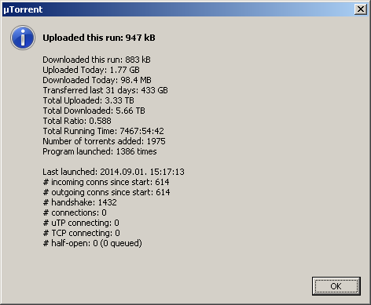

I’ve been looking into switching from µTorrent since forever. I really liked it but as it got filled with bloatware above v2.2.1, I was stuck with that version, which was released in early 2011. I examined other clients periodically but none of them were to my liking.
Today I finally migrated to qBittorrent so here’s a screenshot of the stats window - observe how ‘Last launched’ should be taken literally in this case.